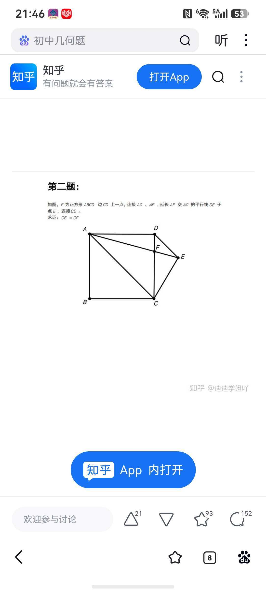

① 题目

如图，F 为正方形 ABCD 边 CD 上一点，连接 AC、AF，延长 AF 交 AC 的平行线 DE 于点 E，且 ，连接 CE。
求证：
② 解题解析（坐标法，可与右侧动态图对照）
设正方形边长为 ，建立如图坐标系：。
- F 在 上，设 ，则 。
- ，而 斜率为 ，故直线 ；又 在 延长线上，联立解得
- 条件 ：由 得
- 验证 ： 代入 ，化简得 。
- 故 ，得证 ✓。
③ 动态演示要点
拖动右图点 F（在 CD 边上滑动）：E、CE、CF 实时联动。
· 上方读数 绿/红 显示 与相等判断；
· 规律：恰在 （，即 F 距 C 约 3/4）时 成立；
· 把 F 拖到灰色标记点 F′ 处（即 AE=AC 的精确位置），读数变绿「✓ CE = CF」；拖走再拖回即可反复验证。
· ⚠️ F 起点在 C 端（param 0），沿 CD 边向上拖到 F′ 即可；用无参数 Point(path) 保证可拖（此 build 中带参数 Point(path,数值) 是固定点拖不动）。
· 上方读数 绿/红 显示 与相等判断；
· 规律：恰在 （，即 F 距 C 约 3/4）时 成立；
· 把 F 拖到灰色标记点 F′ 处（即 AE=AC 的精确位置），读数变绿「✓ CE = CF」；拖走再拖回即可反复验证。
· ⚠️ F 起点在 C 端（param 0），沿 CD 边向上拖到 F′ 即可；用无参数 Point(path) 保证可拖（此 build 中带参数 Point(path,数值) 是固定点拖不动）。